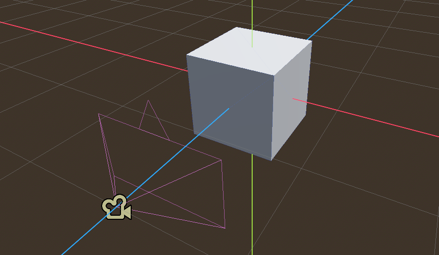
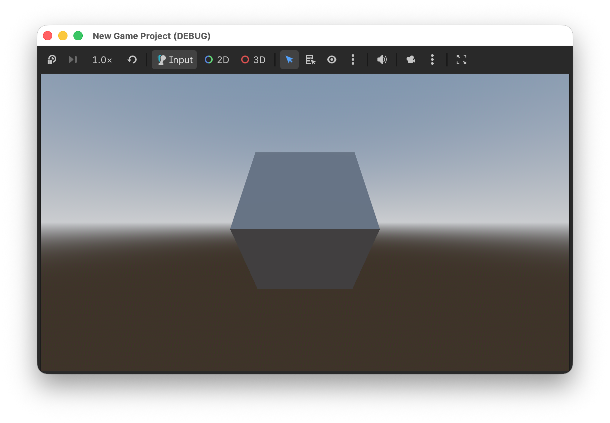
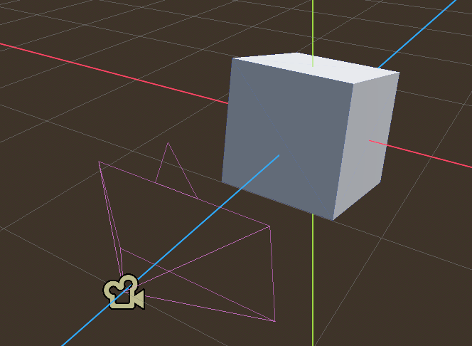
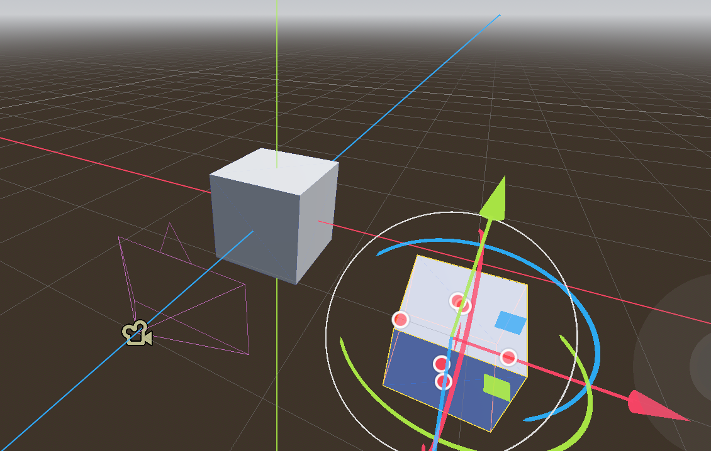
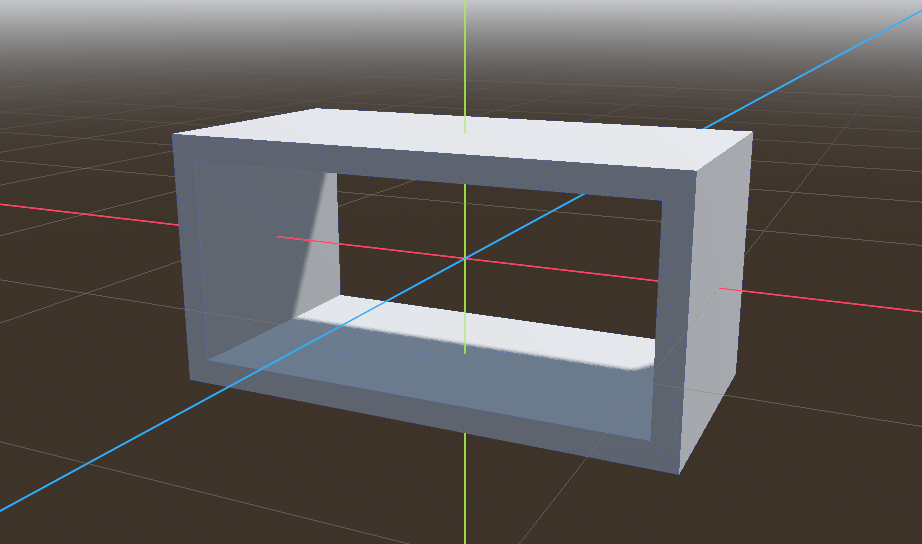
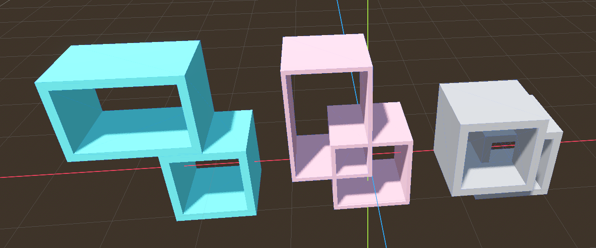
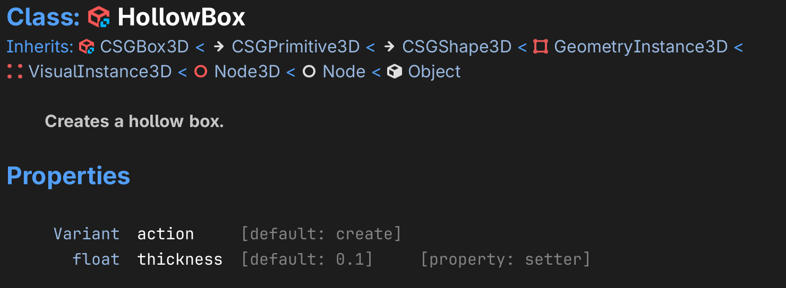
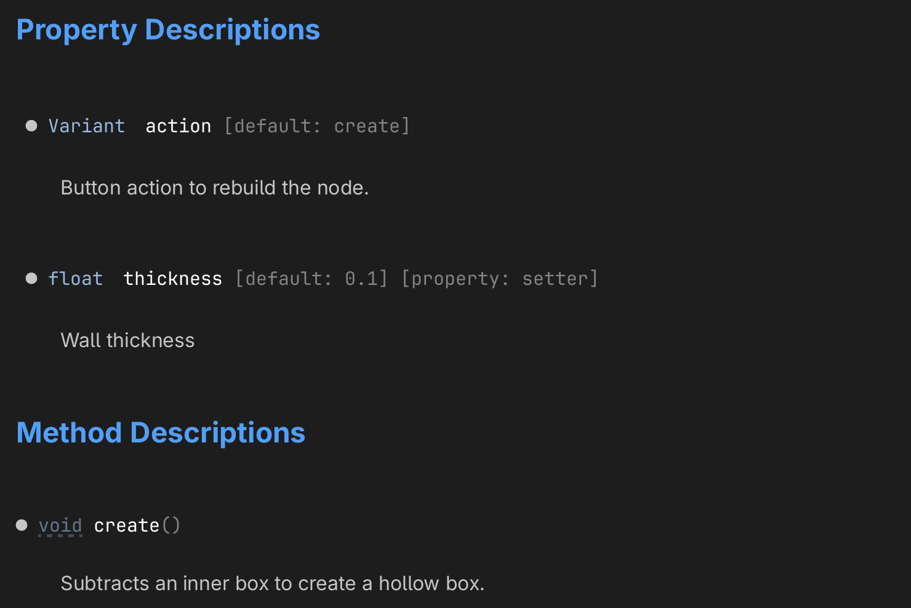
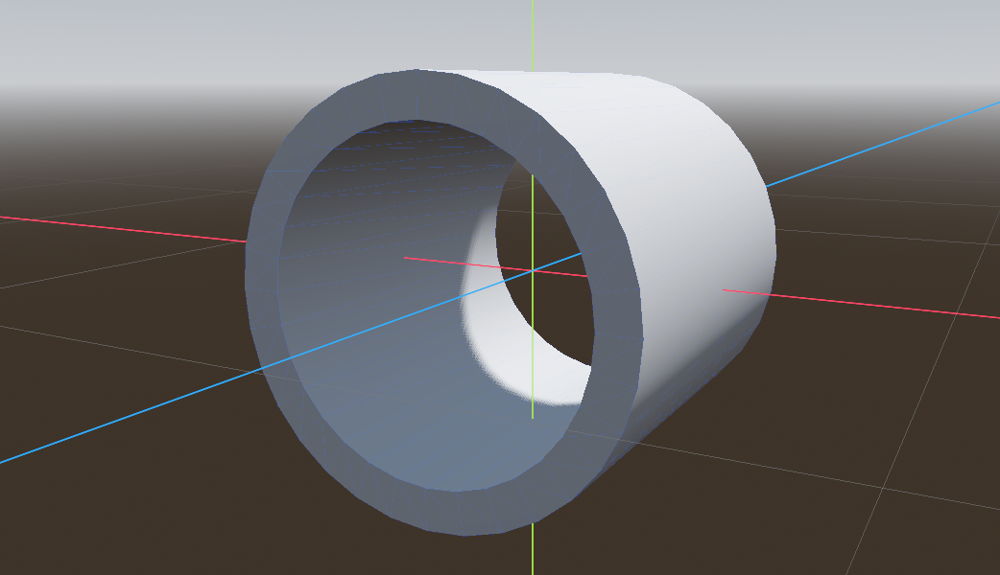
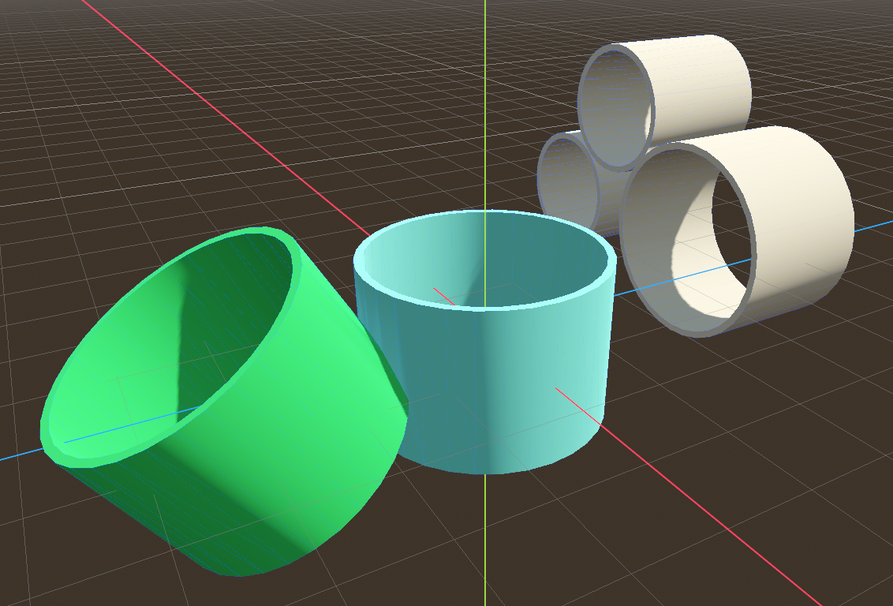

Execute code in the editor¶
The @tool directive allows us to execute code in the editor.
This is a convenient preview function. It allows to:
animate nodes directly in the editor
to create nodes programmatically and interactively
Rotate a box¶
To show how to create a rotating cube, create a new scene with the following nodes:
a
Node3Das a base node calledToola
WorldEnvironmentto have lighta
CSBBox3DrenamedRotatea
Camera3Dto see the object (moved backward 2m along the z-axis)
{kind=link}
This is the static image you get in the editor.

Add a script to the Rotate node, which appears as a white script icon.
The script makes the box rotate around the x-axis.
extends CSGBox3D
var speed = 1
func _process(delta: float) -> void:
rotation.x += delta * speed
With cmd+R the game can be played. We see a cube rotating around the x-axis. The cube only rotates while in the game, not in the editor.

Execute in the editor¶
Adding the directive @tool at the beginning of the script allows to play the script in the editor as well. It allows to animate nodes by executing code in the _process() function.
@tool
extends CSGBox3D
var speed = 1
func _process(delta: float) -> void:
rotation.x += delta * speed
Attention
Each time you make a change in the script, the scene must be reloaded with Scene > Reload Saved Scene.
The script icon now turns blue to indicate that the script is executed in the editor via the @tool directive.
{kind=link}
This is the static image you get in the editor.

Try to change the speed and reload the scene.
Move a cube¶
Now add a second cube. Attach the following script.
{kind=link}
First we calculate the current time by accumulating the time delta to the variable t. The sin() function is used to move the cube up and down along the y-axis.
@tool
extends CSGBox3D
var speed = 1
var t = 0.0
func _process(delta: float) -> void:
t += delta
position.y = sin(t * speed)
The first box rotates, the second box moves up and down.

Change parameters in the inspector¶
It is possible to export the parameters and configure them in the inspector.
The @export directive exports the value:
it can be changed in the inspector
it will be saved with the scene
In order to change the speed from within the running script, we must use a setter function set(x).
@tool
extends CSGBox3D
@export var speed = 3:
set(x):
speed = x
func _process(delta: float) -> void:
rotation.x += delta * speed
Now we can speed up the rotation, make it zero, or even inverse the direction.
Change speed and amplitude¶
For the moving cube, we can add two parameters: speed and amplitude.
@tool
extends CSGBox3D
@export var speed = 1:
set(x):
speed = x
@export var amplitude = 1:
set(x):
amplitude = x
var t = 0.0
func _process(delta: float) -> void:
t += delta
position.y = amplitude * sin(t * speed)
Create a hollow box¶
In Godot it is possible to create new types of node objects. For example, it would be convienent to have not just a filled box, but also a hollow box. We can take an existing type and modify it.

create an
addonsfoldercreate a new script file called
hollow_boxadd the following code:
@tool
extends CSGBox3D
class_name HollowBox
## Creates a hollow box.
First we make it execute in the editor (editor tool).
This script extends the CSGBox3D. The new class name is HollowBox
This already adds the new class as a child of CSGBox3D. You can test this by adding a new node to a scene (cmd+A).
{kind=link}
Now we add an exported variable, which lets us select the thickness of the wall.
We use a setter function to set the new value and also to call the function create().
@export var thickness := 0.1:
set(value):
thickness = value
create()
## Button action to rebuild the hollow tube.
@export_tool_button("Rebuild") var action := create
The thickness and the action button appear in the inspector panel.
We can change the wall thickness and rebuild the node.
The size and material of the outer box are selected with the original CSGBox3D attributes.
{kind=link}
The _ready() function creates the inner CSG box, which is subtracted from the base box.
func _ready():
create()
The _ready() function first looks for a procedurally created node.
A procedurally created node does not have a parent.
If we find a node without an owner, this is our inner tube.
func create():
var inner = null
# find a procedurally created node
for child in get_children():
if child.owner == null:
inner = child
break
If inner does not exist, we create a new box and add it as a child.
We set up the operation to subtraction.
if inner == null:
inner = CSGBox3D.new()
add_child(inner)
inner.operation = CSGShape3D.OPERATION_SUBTRACTION
If the outer box has a material, we want to make the inside the same.
The size of the inner box is smaller by the thickness in the x and y direction.
if material:
inner.material = material
inner.size = size
inner.size.x -= thickness * 2
inner.size.y -= thickness * 2
inner.size.z += 0.01 # Slightly taller to avoid "Z-fighting" or thin faces

Download the Godot Script.
Create automatic documentation¶
All comments preceded by ## will be added as description.
## Creates a hollow box.

The help description for exported variables can be :
an inline description (
thickness)placed on the previous line (
action)
@export var thickness := 0.1: ## Wall thickness.
## Button action to rebuild the node.
@export_tool_button("Rebuild") var action = create

Hollow Tube¶
Now lets create a hollow tube, by subtracting an inner cylinder from a CSGCylinder3D node.

In the addons folder create a new file called hollow_tube.gd.
First make the script a tool with the @tool annotation so we can use it interactively.
Then extend the CSGCylinder3D class to create a new class called HollowTube.
Add a help comment with ##.
@tool
extends CSGCylinder3D
class_name HollowTube
## Creates a hollow tube.
Again, export the thickness variable and an action button. Add a help comment to them.
@export var thickness := 0.1: ## Wall thicknness.
set(value):
thickness = value
create()
## Button action to rebuild the hollow tube.
@export_tool_button("Rebuild") var action := create
The _ready() function creates the hollow tube once the node is ready, after joining the scene tree.
func _ready():
create()
Like before, check if a procedurally created node exists already. If not, create one.
## Subtracts an inner cylinder from the `CSGCylidner3D`.
func create():
var inner = null
# find a procedurally created node
for child in get_children():
if child.owner == null:
inner = child
break
# create one if it does not exist
if inner == null:
inner = CSGCylinder3D.new()
inner.operation = CSGShape3D.OPERATION_SUBTRACTION
add_child(inner)
Finally update the inner cylinder. Make the radius smaller by the wall thickness. Make the height slightly larger to avoid “z-fighting”.
# update it
if material:
inner.material = material
inner.radius = radius - thickness
inner.height = height * 1.01 # Slightly taller to avoid "Z-fighting" or thin faces
inner.sides = sides
inner.cone = cone
Download the Godot Script.

Download the Godot project.